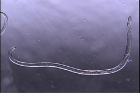

Caribenema ferox
Virtual specimen prepared by Melissa Yoder, Paul De Ley, Irma T. DeLey, and Luis Mundo
Click on the appropriate thumbnail image to select the relevant specimen.

Adult Female
copyright 2002